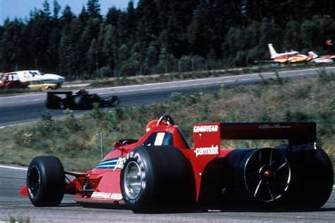

La Brabham BT46 est une monoplace de Formule 1 conçue par l'équipe britannique Brabham pour la saison 1978. Cette voiture est particulièrement célèbre en raison de sa conception innovante, notamment de son système de refroidissement particulier. Voici l'histoire de la Brabham BT46 :
Conception et Développement :
La BT46 a été conçue par l'ingénieur en chef Gordon Murray et son équipe chez Brabham. L'objectif était de concevoir une voiture compétitive et innovante pour la saison de Formule 1 de 1978.
Ventilateur à Effet de Sol :
La caractéristique la plus notable de la BT46 était son système de refroidissement. Au lieu d'un radiateur traditionnel, la BT46 était équipée d'un grand ventilateur monté à l'arrière de la voiture. Ce ventilateur avait pour fonction principale de créer un effet de sol, aspirant l'air de l'arrière de la voiture, ce qui augmentait l'adhérence en créant une sorte de vide sous la voiture.
Le Modèle BT46B "Fancar" :
La version la plus célèbre de la BT46 est le modèle BT46B, surnommé la "Fancar" en raison de son ventilateur. La voiture a été introduite au Grand Prix de Suède en 1978.
Victoire en Suède :
La BT46B a connu un succès immédiat. Niki Lauda a remporté le Grand Prix de Suède de 1978, marquant la seule victoire de la BT46B en compétition.
Controverse et Retrait :
La victoire de la BT46B a suscité la controverse, et d'autres équipes de Formule 1 ont rapidement soulevé des questions quant à la légalité du concept de la voiture. En réponse à la pression, la Fédération internationale de l'automobile (FIA) a déclaré que le système de refroidissement de la BT46B était légal, mais Brabham a choisi de retirer la voiture après une seule course.
Héritage :
Bien que la BT46B n'ait pas été utilisée de manière continue en compétition, elle reste l'une des voitures les plus emblématiques de l'histoire de la Formule 1 en raison de son approche novatrice et de sa victoire unique.
La Brabham BT46 et son concept de ventilateur ont laissé une empreinte durable dans l'histoire de la Formule 1 en démontrant comment des idées créatives et audacieuses peuvent influencer le sport automobile.